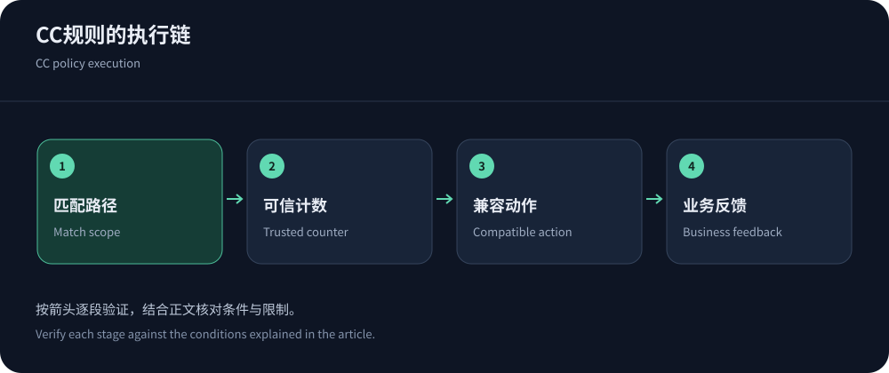
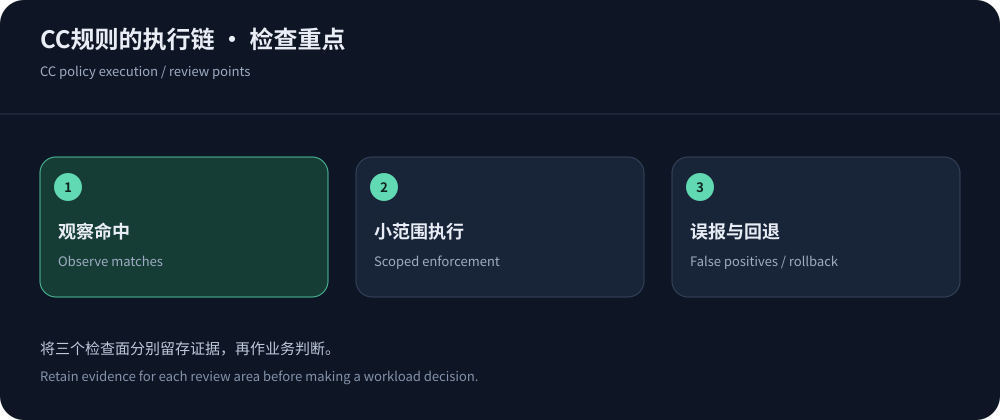

Protection depends on where requests are inspected
A protected CDN can rate-limit, challenge, block and cache before requests reach an origin. It cannot automatically know the computational cost of orders or reports, or stop traffic that bypasses it. Measure legitimate completion and origin recovery rather than blocked-request counts. “CC” is a broad Chinese industry term for application-layer abuse.
CDN5 is a candidate, but published QPS tiers are not endpoint-specific evidence. Establish trusted origin access and correlated logs first. Use resource classification to distinguish dynamic, anonymous and administrative paths.
Build a cost-aware baseline
Group normal traffic by route template, method, status, identity and carrier, alongside CPU, database waits and queues. Normalize variable identifiers in paths. Separate campaign peaks from quiet periods and exclude known incidents from the baseline.
Shared egress makes strict per-IP limits risky; arbitrary client cookies make weak identities. Combine trustworthy identities, route scope and overall concurrency budgets. Check supported windows, counters and plan eligibility in Cloudflare rate rules.


Make each rule explainable
A maintainable rule defines scope, counting key, trigger and action. Narrow scope improves diagnosis; stronger actions require compatibility testing. This design checklist intentionally avoids universal production thresholds. Record ownership, version and rollback.
| Component | Design question | Validation |
|---|---|---|
| Scope | Target costly endpoints; distinguish reads/writes and alternate routes. | Replay representative authorized samples and explain matches. |
| Counting key | Assess identity trust, shared egress and anonymous identity rotation. | Test shared IPs, distributed sessions and anonymous requests. |
| Action | Browsers may handle challenges; SDKs/callbacks need protocol-compatible errors. | Measure legitimate completion, retries and callbacks. |
| Recovery | Define expiry, relaxation and scoped exception ownership. | Verify safe removal after origin recovery. |
Cache offload must preserve correctness
Cache public resources without sharing account data or writes. Extra query parameters can fragment keys, but removing meaningful parameters can mix permissions, languages or versions. Check freshness and validation against RFC 9111.
A high hit ratio does not protect a database from a few costly searches. Add parameter constraints, execution limits and concurrency budgets. Edge detection and application cost control solve different parts of the problem.
Origin limits need trustworthy client identity
Behind a CDN, connection addresses often identify proxies. Counting those addresses can aggregate unrelated users, while blindly trusting client-IP headers enables spoofing. Restrict origin ingress and recover identity only from trusted proxies before enforcing address-based rules.
The NGINX module supports rate control and observation. Understand burst queues, delays and rejection. Queuing consumes connections; write retries also need idempotency to prevent duplicate work.
Validate a search policy with bounded samples
For site search, prepare bounded authorized samples: ordinary, empty and oversized queries plus authenticated/anonymous sessions. Verify scope and application-side parameter validation. Expensive query classes may need complexity or concurrency caps rather than higher rate thresholds.
Correlate edge counters, origin arrivals and database execution. Observation is not enforcement. After activation, inspect error handling and backoff if retries rise. Scope exceptions by route, identity and expiry.


Rollout and evidence determine operational quality
Observe, enforce on a few paths, then expand. Preserve snapshots and correlate edge decisions with origin IDs. Track legitimate transactions, challenges, tail latency and queues. Avoid changing cache keys, WAF and application code simultaneously. Verify crawler, monitor and callback exceptions rather than trusting User-Agent claims.
Bot management adds capabilities beyond simple rate limits. During incidents follow the CC response guide, restore critical workflows and refine policies afterward.